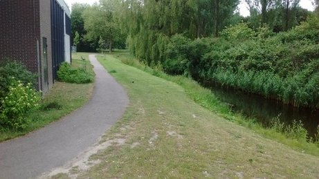
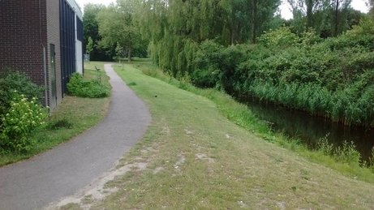
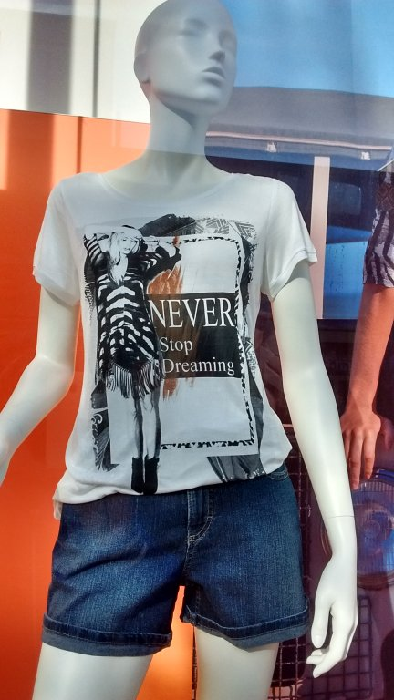
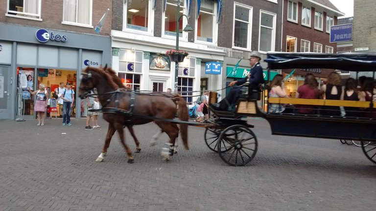

پیادهروی در دلفت-عصر نه جون دوهزار و پانزده

از این جادههای کوچک خوشم میآید. خیلی بهتر بود اگر سمت چپ این مسیر به جای آن ساختمان قهوهای، درخت و بوته داشت.

از این جادههای کوچک خوشم میآید. خیلی بهتر بود اگر سمت چپ این مسیر به جای آن ساختمان قهوهای، درخت و بوته داشت.

Never stop dreaming! میتواند شعار شیرازیها باشد.

عکس را که میگرفتم دو تا خانم بامعرفت دوچرخهسوار نگه داشتند که نروند توی کادر. اینجا بنویسم که یادم نرود. آدم است دیگر بامعرفتیها یادش میرود و بیمرامیها خوب یادش میماند. صحبت از «آدم است دیگر» و رفیق بامعرفت شد، از همینجا سلام کنم به استاد بنی عزیز و بامرام.